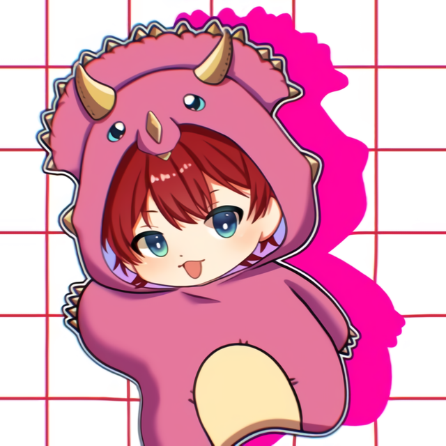
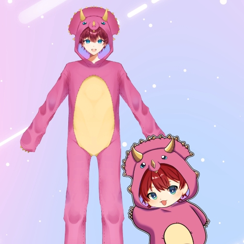
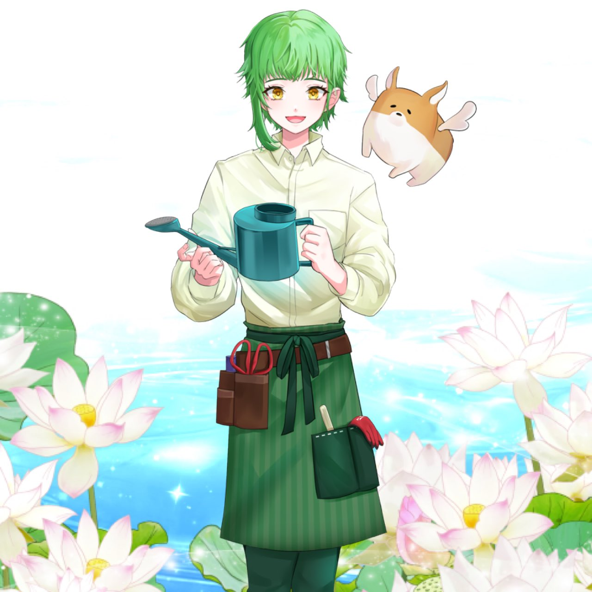

V-iii所属
のIRIAMライバーがお送りする
すいのこラジオまで残り...
お便りを送る
すいのこラジオ
出演者
プロフィール

大人ノコ
蓮実スイレン
大人ノコ｜
Twitter
V-iii所属、地球で生まれたピンクトリケラトプスの赤ちゃん！ほぼ毎日
IRIAM
で配信してます!
イケボ
男ノコ
歌上手い
たまにド音痴
虚言癖
赤ちゃん

蓮実スイレン｜
Twitter
V-iii所属、時々ヤンデレな精神科看護師の癒し系男子！ほぼ毎日
IRIAM
で配信してます!
癒し系
ヤンデレ
男の子
こぎパン
ゆるふわ
看護師

公式Twitter
すいのこ
ツイート
Tweets by sui_noko_viii